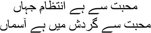
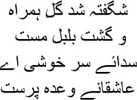
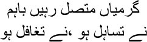

11

All the arrangements on earth are for love
Love makes the sky go round
 a Allah, what a life you had begun to live, Manto bhai. The lord had made every necessary arrangement for you to have dozakh written into your destiny. Just like he had taken care in my case too. What will this fellow do in jannat? Indeed, what would I have done? Maybe a houri or nymph would have been assigned to me, but how long could I have stared at the same face? Even dead, I wouldn’t have been able to bear the punishment of heaven. It’s all written by the lord’s quill. All my life, I couldn’t find the language to talk of my failure. Even after all the Urdu and Farsi ghazals I wrote, Manto bhai, I don’t think I succeeded in touching these wounds; their agonies did not surface in my ghazals. But I often wondered whether anything beautiful has ever been crafted except through pain. Take the cypress tree, for instance. Its branches and leaves are pruned continuously to make it beautiful—the cypress has to withstand so much pain for the sake of this beauty. Then take wine. You cannot make it without hurting the grapes. You have to cut and slice the reed properly to make a quill. Then let’s say you have to write a letter. You have to cut the paper to the appropriate size, then draw strokes on its breast with ink. Each stroke is nothing but a wound, after all, and what’s the outcome? The mysteries of your heart revealed to your beloved. We cannot give birth to anything beautiful without causing pain. Then how can God? All the games of creation and destruction in his world are played to give birth to new kinds of beauty. Take me. He made me with a fistful of dust; then he flung me up in the sky, where I stayed for some time; but then one day he suddenly tossed me to the bosom of the earth, I fell here at this spot, and the impact of that fall remained as a scar on this planet. The world acquired this gash whose name is Mirza Ghalib. But who can deny the beauty of this wound, Manto bhai? This is how the world goes round, doesn’t it?
a Allah, what a life you had begun to live, Manto bhai. The lord had made every necessary arrangement for you to have dozakh written into your destiny. Just like he had taken care in my case too. What will this fellow do in jannat? Indeed, what would I have done? Maybe a houri or nymph would have been assigned to me, but how long could I have stared at the same face? Even dead, I wouldn’t have been able to bear the punishment of heaven. It’s all written by the lord’s quill. All my life, I couldn’t find the language to talk of my failure. Even after all the Urdu and Farsi ghazals I wrote, Manto bhai, I don’t think I succeeded in touching these wounds; their agonies did not surface in my ghazals. But I often wondered whether anything beautiful has ever been crafted except through pain. Take the cypress tree, for instance. Its branches and leaves are pruned continuously to make it beautiful—the cypress has to withstand so much pain for the sake of this beauty. Then take wine. You cannot make it without hurting the grapes. You have to cut and slice the reed properly to make a quill. Then let’s say you have to write a letter. You have to cut the paper to the appropriate size, then draw strokes on its breast with ink. Each stroke is nothing but a wound, after all, and what’s the outcome? The mysteries of your heart revealed to your beloved. We cannot give birth to anything beautiful without causing pain. Then how can God? All the games of creation and destruction in his world are played to give birth to new kinds of beauty. Take me. He made me with a fistful of dust; then he flung me up in the sky, where I stayed for some time; but then one day he suddenly tossed me to the bosom of the earth, I fell here at this spot, and the impact of that fall remained as a scar on this planet. The world acquired this gash whose name is Mirza Ghalib. But who can deny the beauty of this wound, Manto bhai? This is how the world goes round, doesn’t it?
Look, our friends are going back to sleep again. What is it— what’s the matter? This exchange between a couple of idiots seems rather cruel, doesn’t it? Theek hai, very well, let’s change the subject, shall we Manto bhai? Life—mine or the Hazrat’s or prince Salim’s—is usually quite dreary. You have to turn into the washerman’s ass to bear this burden; I plod on, plodding along. To tolerate this existence we have to resort to the hikayat sometimes; not stories, but narrative poems. Stories are about our lives, but these long tales in verse are like a reflection of another world in the mirror. I have plenty of time to tell my stories, none of us is running away from our graves. But since the subject of the hikayat came up, let’s hear one. Tales like these surface only for a brief while before being lost again.
This one is titled Sihr-ul-Bayan. It’s not about the head, the sar, but it can certainly make your head spin with its magic. Look, Manto bhai, they’re all sitting up again. This masnavi was written by Mir Hasan, the son of Mir Zahid, whom Sauda used to make fun of. He was born seventy years before me. But he left Dilli for Faizabad; not that he had been keen on moving, for his lover used to live in Dilli. But what could he do—making love and making a living don’t go hand in hand. However, I’m told Hasan sahib did not have a particularly comfortable life in Faizabad either. He barely managed to make ends meet. When it came to writing, though, he was a champion. Sihr-ul-Bayan became so famous that it was known as Mir Hasan’s masnavi. This masnavi was actually a hikayat. I’ve heard that it used to float in the sky, on the wind, even on people’s lips. Just imagine, this hikayat became Mir Hasan’s masnavi.
There was a nawab named Malik Shah. Where? I cannot tell. Why not assume that his gorgeous city existed in a mirror. What did this city look like? Words, it seems, cannot describe it. It was as exquisite as the azan at dawn. Sparkling roads, with houses as white as snow, interspersed with flower-gardens. And where there were gardens there were bound to be a variety of birds and songs. This city was supposed to have had markets you wouldn’t want to leave. It wasn’t so much a case of walking around a market as it was of exploring a crystal palace. You can imagine what the nawab’s fort in such a city would be like. Yes, my brothers, you do have to use your imagination, for that is the way of the hikayat.
The nawab was very sad, however, because he had no son. When it was time for him to die, whom would he anoint as king? One day, he summoned all his ministers and told them, ‘It is time for me to leave this world now.’
— Why, Jahanpanah? There was a clamour of protests.
— What am I going to do with all these riches? Whom shall I bequeath them to? I ruled my kingdom with unwavering attention all these years. I had no respite to consider the path of God. Enough. I want to abdicate now and follow his path.
‘You’re mistaken, Jahanpanah,’ said the prime minister. ‘The lord gave you the responsibility of running your kingdom. This is his chosen path for you. If you do not fulfil this responsibility, how will you answer him on the Day of Judgement, huzoor?’
— But who will rule when I am gone?
— Who says you will not have a son? I am sending for Brahmins and astrologers. Let them make their predictions. We will consider the future thereafter.
The nawab accepted the prime minister’s suggestion. Brahmins and astrologers arrived and began to chart the nawab’s future. Eventually they declared unanimously that the nawab’s Begum was definitely going to give birth to a son. Nobody could alter the course of destiny. If Sauda had been present, he might have joked, where is the course of destiny hidden, can you give me a glimpse? Under the pyjamas, perhaps? The Brahmins announced that the Begum would have a son as beautiful as the moon. But yes, there was a problem. What problem? Just that the boy would have to be protected zealously till the age of twelve. For there was a risk of losing him before he turned twelve.
— What are you saying? The nawab’s face fell.
— Oh no, we aren’t predicting the death of the prince. But he might be lost. So you must keep watch on him continuously, huzoor.
— Arrangements shall be made as you recommend. But what steps do we have to take?
— He must not be allowed out of the fort for twelve years, huzoor. Not even to the terrace.
— Why?
— It appears that a fairy will fall in love with the prince.
— And then?
— The prince will fall in love with someone else.
Just imagine, Manto bhai, the son hasn’t even been born, and already they’re discussing his love life. Enjoying yourselves, my brothers? Keep listening, there will be many more twists and turns to make your senses reel. Do you suppose a game that began with talk of romance is going to end easily? So, before a year had passed, one of the nawab’s wives gave birth to a son. The city erupted in joy. Listen to this sher of Hafiz sahib’s:

The red rose has bloomed
The nightingales swoon
Where are you, wine-lovers?
It’s time for loud celebrations
And do you know what the son was named? Benazir. The nawab distributed riches amongst his subjects unstintingly. For six days the entire city celebrated with singing and dancing and feasting and carousing. The nawab was so happy that he even freed many of his slaves. That’s royal largesse for you. There was no such largesse in Jahanpanah Zafar’s time. It was limited to feeding the poor one good meal.
A new palace was constructed for the prince, with a garden all around it. The palace was beyond compare. The garden was full of cypress and other trees, birdsong rang out everywhere. Hundreds of servants and maids surrounded Benazir all the time. Because the prince must not be let out of sight. Within a few years, Benazir had mastered reading and writing, horsemanship, archery, painting and shooting. But, most important, he had a wonderful heart; the servants and maids were like his brothers and sisters, his family. Had he not been aptly named, my brothers? He really seemed to be the red rose that Hafiz sahib described, born in this world only to spread its fragrance.
On the prince’s twelfth birthday, the Nawab Malik Shah announced that the prince would tour the city that day. Pretty maids bathed Benazir with fragrant oils, and dressed him so beautifully that he looked like a painting by the master artist Bihzad. Pearls were rained on Benazir as soon as he emerged from the palace, while his retinue immediately began to argue and fight over their share. Every home and every shop in the city was decorated with finely embroidered cotton. Large mirrors were set up to reflect the sunlight in its seven constituent colours. Images of the parade would appear in the mirrors too. Indeed, the prince’s first tour of the city remained imprinted in everyone’s memory in veritable letters of gold.
But they had made a miscalculation, which neither the nawab nor anyone else had realized. There was still a night to go for the dangerous period of twelve years to end. It was a full moon night, the moonbeams were flooding the palace, and Benazir was sleepy after the excitement of the day. He felt a desire to sleep on the terrace in the light of the full moon. This is the course of destiny, Manto bhai. You never know when an urge will strike without warning, nor what kind of hangover it will lead you into. So a bed was prepared for the prince on the terrace, Benazir even fell asleep in the soft moonlight, under the caressing fragrance of the flowers. Several servants and maids surrounded him to keep watch. But suddenly a sweet perfume wafted in on the cooling breeze, putting all of them to sleep. Only the moon observed from the sky the events that were about to unfold in Benazir’s life.
Do you know the source of the cooling breeze, my brothers? It was a fairy. She was out in the night sky for a ride on her flying throne. Allow me to tell you something about this fairy, Manto bhai. There are many here who came to their graves well after me, to them a fairy is a pretty woman with gossamer wings. All this is the white man’s imagination. Do you know whom we call a fairy in Farsi? A disembodied spirit who appears in man’s life disguised as a beautiful woman. Do you know why? The fairy actually wants to imprison the man by deceiving him with the pretence of love. She controls him according to her wishes; disobeying her leads to death. Sometimes it seems to me that this is how love comes into our lives, every love affair is death; doesn’t it seem as though each one of us has been imprisoned by a different fairy till eternity, Manto bhai?
The fairy was named Mahrukh. The sight of the handsome Benazir made her gasp. Could such a beautiful man possibly exist in this universe? But clearly he could, as she could see. Oh, I must have him, what sort of fairy am I if I cannot snare him? Mahrukh descended on the terrace, she felt that the night was magical not because of the moonlight but because of the lustre of Benazir’s beauty. She pressed her lips against the sleeping Benazir’s. And then? Then she took him away to her fairyland.
When the servants and maids awoke, they found the prince gone. Where was he? Even after combing the entire palace and the garden, he was nowhere to be found. The nawab and his wives broke down in tears. And not just them. The flowers and trees and birds and fountains all began to cry too. Where had their favourite prince disappeared? Who had taken him away? Obviously, they couldn’t find him anywhere in the kingdom.
Benazir remained imprisoned in Mahrukh’s fairyland. Years passed, but he couldn’t forget his home. Mahrukh’s attempts to win him over with all kinds of temptations did not succeed. Then she told Benazir one day, ‘You know you’re my prisoner, don’t you?’
— I do.
— Then you must obey me.
— Take me home.
— I can’t do that. But I can’t bear to see you so unhappy, Benazir. I love you.
— Then take me home. Benazir grasped Mahrukh’s hand.
Mahrukh laughed. —Prisoners cannot return home, Benazir. But there’s something I can do for you. When I visit my father every evening, you can take a ride too. I can give you a magic horse. You could take a ride on it for a couple of hours; it’ll make you feel better. The magic horse will take you wherever you want to go. But wherever you go, you must promise not to give your heart to anyone else. If you do, you will be punished suitably. Don’t forget, ours may be a romantic relationship, but you’re still my prisoner.
Benazir accepted Mahrukh’s proposal. What choice did he have? You have no idea of the punishment meted out by fairies, my brothers, it’s even worse than hell. One night, as he was flying about on his magic horse, Benazir spotted a lovely garden beneath him. And glittering in the moonlight in the middle of that garden was an exquisite palace. Descending to the garden, Benazir hid behind a tree to check whether anyone else was present. A little later he spotted a few young women beside a fountain. And do you know what he saw among them? A vision like the full moon amidst the stars. It was princess Badr-e-Munir, daughter of another nawab named Masood Shahr. Her beauty glowed through her cotton dress like a candle on its stand. Benazir could not tear his eyes away from her. Then he remembered the fairy Mahrukh. You mustn’t give your heart to anyone else, Benazir. But what was Benazir to do now? He had already given his heart away at first sight. This was how it used to be in our lives, my brothers. The instant two pairs of eyes met, sparks flew. Do you know why? Because our lives were actually spent like prisoners. There was no relationship between love and marriage in our lives. Love was a sin. The woman’s place was in the ladies’ chambers; she wasn’t allowed to set eyes on anyone except her brothers. And men couldn’t set eyes on any women at all. So all it took was for two sets of eyes to meet. Love, and sin. All this must not be allowed. Get them married as quickly as possible. But what did this lead to? Men were forced to visit brothels, and women had secret affairs. It’s human nature, Manto bhai, human nature—who can stop it? Could anyone stop Mir sahib? It was because they couldn’t that they branded him a lunatic. This is what society is good at, Manto bhai. When it cannot accept you, it can stamp you with the label of a mad man. You’re outside civilized society then, outside the tamaddun. Deaf, mute, speechless.
Yes, let me tell you what happened after this. That was the first time that Benazir set eyes on Badr-e-Munir. I’m reminded of Mir sahib’s sher:

Let us be addicted to each other always
Never less eager, never indifferent
Badr-e-Munir fainted when she saw how handsome Benazir was. Her friend Nazm-un-Nissa, the prime minister’s daughter and extraordinarily beautiful herself, sprinkled rosewater on her to revive her. When she recovered, the princess pretended to be angry, saying, ‘Who has dared to intrude in my garden?’ Actually, of course, an entirely different sort of fire was raging within this statement. This is what first love is like, isn’t it? The game of mock quarrels and making up continued. They made silent glances at each other. Then Benazir told the princess everything—even the details of how he was being held prisoner by the fairy Mahrukh. Do you know what Badr-e-Munir said? ‘I cannot share you with anyone. You can live with your fairy then, don’t come back here.’ Grasping the princess’s feet, Benazir said, ‘I don’t even want to know whether Mahrukh loves me or not. I cannot live without you. But I have to go back this one time. If I get my freedom I’ll be back at the same time tomorrow. I am leaving my heart with you, it’s only my body that will return to Mahrukh’s prison.’
Everything was prepared for Benazir’s return the next day. Badr-e-Munir dressed as though it was her wedding night. The room grew redolent with flowers and the fragrance of ittar. The food, the wine, the wine glasses were all readied. Books of poetry by the Farsi poets Juhuri and Naziri were placed by the pillows on the bed. Benazir arrived as scheduled. After some conversation they went to bed, embracing each other with their glasses of wine. No description can do justice to all this. When they emerged from the room, Benazir was glowing even more, and Badr-e-Munir was full of blushes. But the hours marched forward, and Benazir had to go back. So it went on, day after day.
But human beings are never granted unadulterated happiness. Mahrukh the fairy came to know of everything; she even witnessed it all with her own eyes. Mahrukh was furious when Benazir returned that day. She began to spit fire. ‘Prepare to be punished, traitor.’ Summoning a djinn, Mahrukh directed, ‘Take him to the desert and cast him into a dry pit, and cover its mouth with a rock.’ The djinn took him some food once a day. Benazir began to live again as a prisoner in the dark, dry pit. Meanwhile, Badr-e-Munir wilted like a flower as she waited day after day for Benazir. You couldn’t bear to glance at such a flower. She passed days on end without sleeping. Then one night, she slept eventually, and in her dream she saw the pit in the desert, Benazir’s voice emerging from it. She woke up. Hearing of her dream, her friend Nazm-un-Nissa said, ‘Don’t weep anymore. I will go into the desert and rescue Benazir. If I live, you will have him back.’ Disguising herself as a monk, Nazm-un-Nissa left, carrying a veena.
One full moon night she was playing the veena in the desert. The birds and beasts forgot to sleep when they heard her playing; a breeze sprang up above the heads of the trees, and the moon looked at her in astonishment. Feroze Shah, the prince of djinns, was passing by at that moment on his flying throne. Descending to earth and realizing that this was a beautiful woman disguised as a monk, he was captivated by the sight of Nazm. Noticing his enchantment, Nazm said, ‘Either turn your mind to Allah, or go back.’ Feroze answered, ‘Yes, I will go back, but first I want to hear you play.’ The sun rose as Nazm played and even Feroze Shah, even a man like him, wept piteously. Is there anything women cannot do, Manto bhai? Do you know what happened after that? Feroze Shah took Nazm to his father’s court on his flying throne. She even had to play the veena at the request of the king of djinns. No one could hold back their tears when they heard her playing. And Feroze Shah? My life will be meaningless without this woman, he concluded. Nazm stayed on at the palace of the king of djinns and began to toy with Feroze, playing hot and cold with him. One day Feroze flung himself at her feet, asking, ‘Why do you make me suffer so? I cannot live without you.’ Sensing her opportunity, Nazm said with a smile, ‘Listen closely to what I tell you. If you can do as I say, you might benefit too.’
— Tell me what I have to do.
— You’re a djinn. If you want to, you can easily find out where Mahrukh has imprisoned Benazir. If you help, Benazir will be saved, and you will get what you want.
On Feroze Shah’s instructions, the djinns fanned out in different directions in search of Benazir. A few days later, one of them returned with information. Feroze Shah wrote a stern letter to Mahrukh, threatening dire consequences if she did not free Benazir. She would also have to swear not to have relationships with humans ever again. Pleading guilty, Mahrukh requested that her father not be informed of any of this. This was how Benazir was finally freed.
After this, Feroze Shah, Benazir and Nazm-un-Nissa went off to Badr-e-Munir on the flying throne. The princess fainted on hearing that Benazir was back. When she had recovered, Nazm-un-Nissa told her, ‘I have had to imprison someone else in order to bring Benazir back to you. Now I have to send him back.’ And then? The lovers billed and cooed all night. They simply couldn’t stop talking. Words are such a trap, Manto bhai, if only people understood this.
Benazir wrote a letter to Badr-e-Munir’s father Masood Shah, revealing his identity and proposing marriage. The nawab accepted with pleasure. Masood Shah’s city erupted in joy. Then Benazir and Badr-e-Munir were married with great pomp and ceremony. What was the wedding like? I have lain in my grave for so long that I have forgotten the language to describe it. Then, at Benazir’s request, Nazm-un-Nissa’s father also agreed to her marriage to Feroze Shah, who returned with his bride to his kingdom on his flying throne. Benazir, too, prepared to return home with his bride.
Did you enjoy this sweet tale of happy endings amidst the stories of ill-luck that the two of us have been telling you, my brothers? But what did Mir Hasan get for writing this masnavi? Nothing at all. It’s just that, after all these years, here in this darkness of the grave, I was able to recount this hikayat to all of you. What more can a poet expect from his fate anyway?